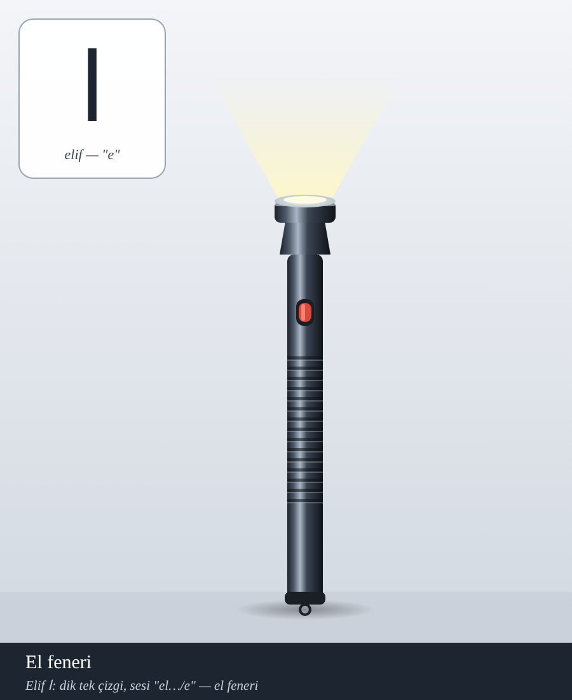
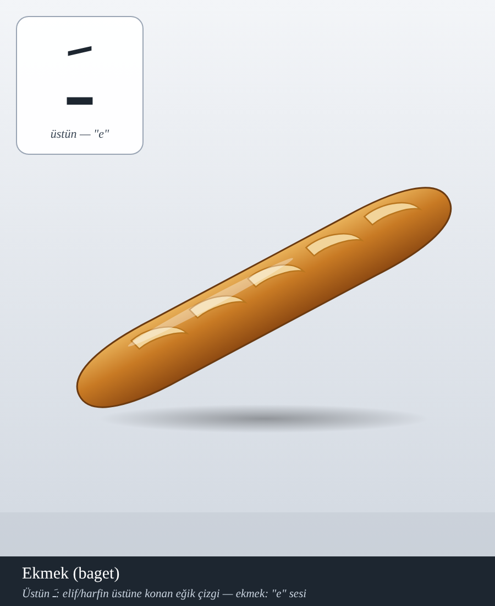
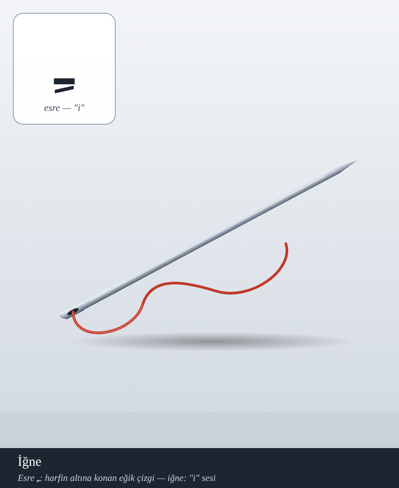
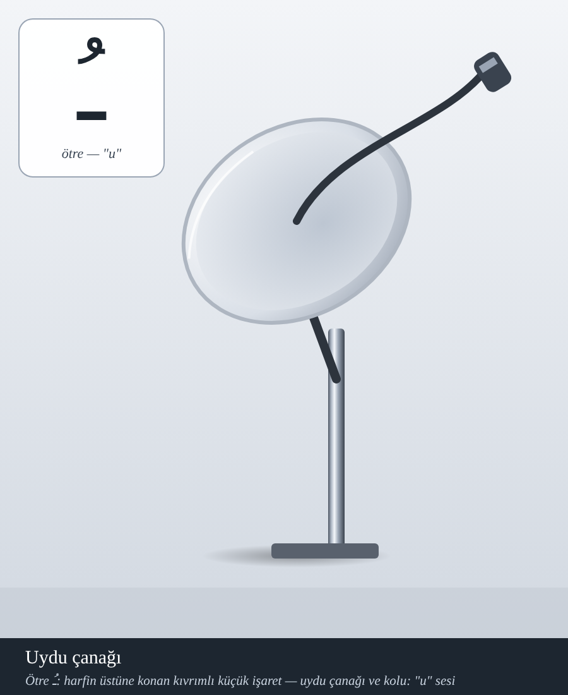
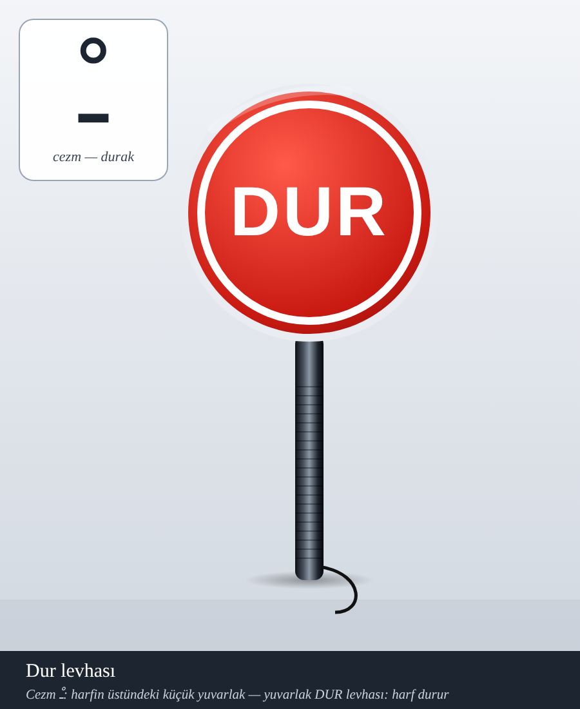
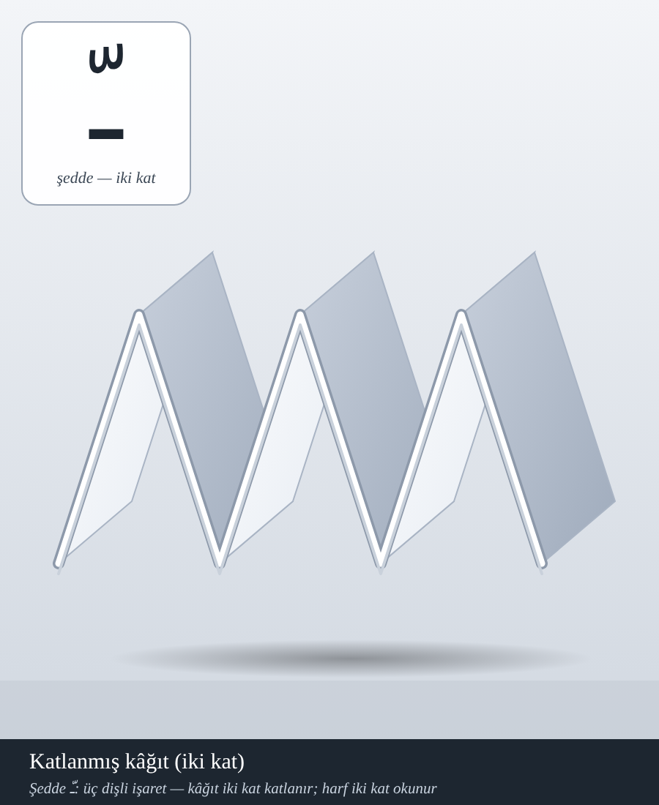

Kur'ân okumaya başlayan kimse sesi hocasından öğrenir; asıl güçlük harfin görüntüsünü tanımaktır. Bu sayfada her harfi ve işareti, şekli benzeyen ve adı o sesle başlayan bir nesneyle öğreniyoruz. Şimdilik Elif harfi ve beş işaret hazırdır; sonraki harfler başta, ortada, sonda ve yalın hâlleriyle gelecektir.

El feneri: dik ve düz gövdesi elifin tek çizgisine, ince boyu harfin yalın duruşuna benzer. Adı “el” diye başlar; harfin adı olan “elif”le aynı sesle açılır.

Ekmek (baget): harfin üstüne yatık duran kısa çizgi, uzanmış bir ekmeğe benzer.

İğne: harfin altına inen eğik kısa çizgi, ipli bir iğnenin şeklidir.

Uydu çanağı: harfin üstündeki küçük kıvrımlı işaret, duvara bağlı çanağa benzer.

DUR levhası: harfin üstündeki küçük daire, “dur, hareket yok” anlamında bir levhadır.

Katlanmış kâğıt: üç dişli şedde işareti, ikiye katlanmış kâğıdın kıvrımı gibidir; harf iki kat okunur.